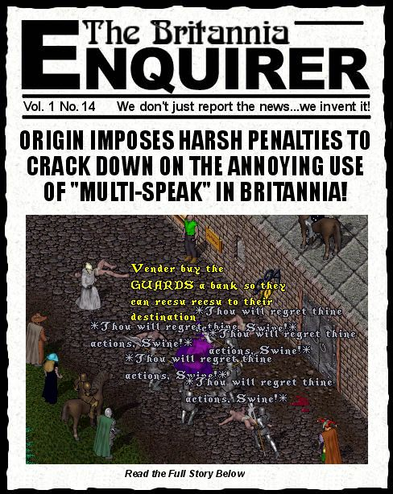

Multi-Speak Defined: Using a speech macro that uses a stupid sentence to cram as many UO standard commands as possible into one sentence.
Now I don't want to get off on a rant here.... YES I DO! I am getting sick and fed up with everytime I go to the bank my screen is filled with people saying the most ludicrous bloody things just to stick everything on one macro so they don't have to remember which key to press when they want to say a particular thing. You want an example? OK, how bout...
"Vender buy me GUARDS to protect me while I balance my bank account then recsu recdu to my destination."
I mean WTF is that anyway? For Pete's sake, LEARN TO TYPE! I mean, how bloody long does it take to type the word "bank"? And while we are on the subject, it is spelled "VENDOR" not "VENDER" you illiterate bastards! Now I am not saying everyone has to speak like they just completed a community college course in Elizabethan Language Skills 101, but at least have the goddamn sentences make sense. It's bad enough just being able to see what the hell I have typed because it is covered in "SELLING RARE BAT DUNG ONLY 375K" spams by people who are too stupid to realize that if no one responds in the first couple of spams then saying it a hundred times won't increase the probability of finding a buyer for your crap.
I personally think all those cute ways to cut down on typing should result in the Terminator guards dicing you up with their halberds faster than you can say "If you will remove thyself I will tell the GUARDS to take me to the bank to watch a vendor drop anchor to sell me a recsu recdu." Not only that but anyone who uses the word SELLING or BUYING more than three times in any ten minute period should immediately be killed and have their entire bank box contents freely lootable on their corpses.
And let's not stop there. How about anyone typing "recsu recdu" more than ten paces from the Encyclopedia Magika T2A entrance/exit in Moonglow or Tricks of the Trade in Papua should immediately suffer a permanent 50 point drop in their Int. I mean, anyone who can't see that repeatedly saying something where it won't do any good makes about as much sense as hailing a taxi from the Observation Lounge of the Empire State building, deserves to have their Int adjusted more to match their IQ. Ack! I think I just qualified with this rant ...
Sheesh, I am getting all worked up here. I better head down to the bank and see if anyone is selling "Chill Out DoOd!" potions.
Anyway, that's just my opinion, I could be wrong....
(*Insert apologies to Dennis Miller for using his trademark phrase HERE*)
later...Tryon